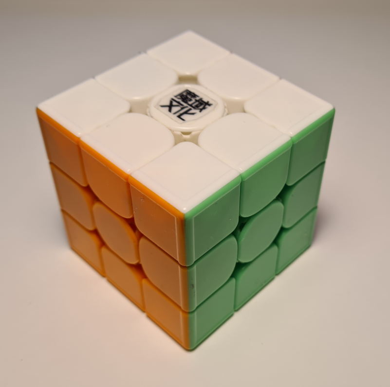

A Rubik-kocka egy logikai mechanikus játék, mely szerte a világon foglalkoztatja a kicsiket, nagyokat, fiúkat és lányokat. Célja, hogy egy összekevert állapotból állítsuk vissza az eredeti helyzetébe a lehető legkevesebb lépésből és a lehető leggyorsabb módon. Többféle változatban is elérhető, de a legelterjedtebb a 3x3x3-as méretű.
